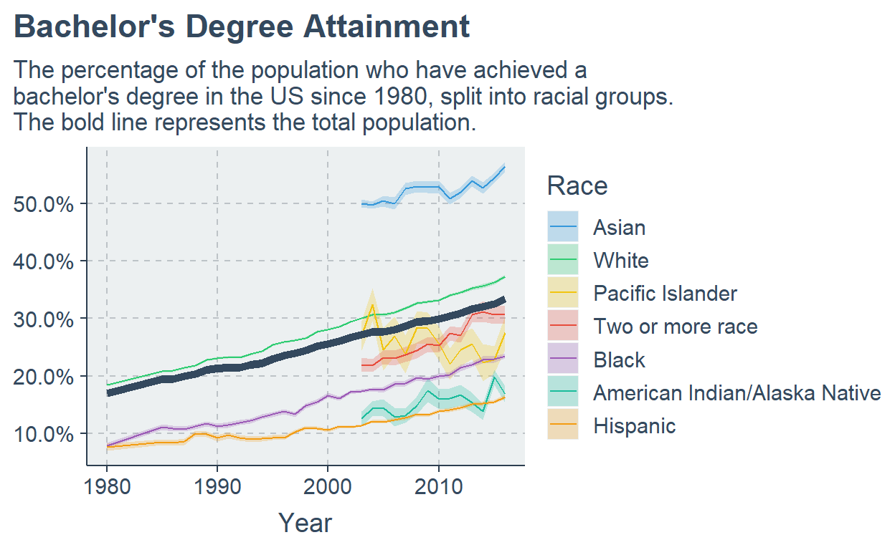
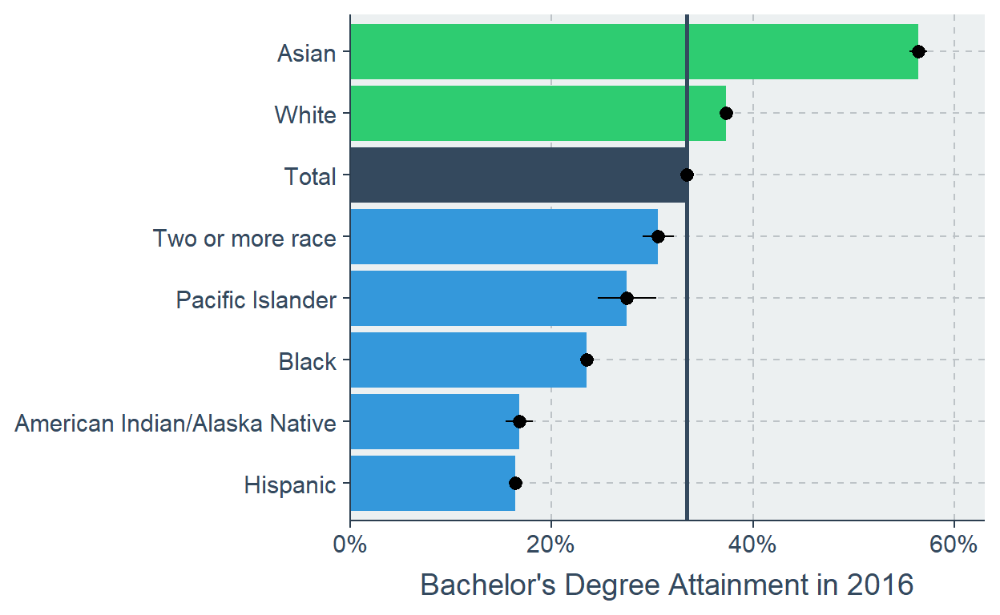

A disucssion on data tidying and cleaning, with applications to a messy, unfamiliar data set.
This week’s TidyTuesday is related to HBCU Enrolment. I will have to start by admitting my ignorance - I had no real idea what “HBCU” actually meant, which I attribute to being from the UK. However, datasets on American culture or politics that I’m not very familiar with has never stopped me before! So I sat down to give it a look. To my horror - or, perhaps, delight - the dataset was not particularly tidy. I will admit, there is something delightful about tackling a particularly untidy data set and turning it into something beautiful and easy to work with.
What do I mean by tidy data? The tidyr vingette defines it as follows:
Each variable forms a column. Each observation forms a row. Each type of observational unit forms a table.
A variable contains all values that measure some unique feature - height, weight, length, temperature. An observation ties together the different values into one observational unit - a date, an object, a person. For the sake of example, say we have a data set of secondary school children who have all sat their end of year exams in several subjects that are all scored out of 100. We may be tempted to lay the data out in a wide format, as I have below:
| student | english | maths | science |
|---|---|---|---|
| Amy | 40 | 68 | 38 |
| Barry | 53 | 52 | 64 |
| Colin | 48 | 56 | 33 |
However, is this tidy? Our observations are the students, yes, but our variables are not student, maths, english and history. The “real” variables should be student, subject and mark.
tab %>%
pivot_longer(-student, names_to = "subject", values_to = "mark") %>%
knitr::kable() %>%
kableExtra::kable_styling()
| student | subject | mark |
|---|---|---|
| Amy | english | 40 |
| Amy | maths | 68 |
| Amy | science | 38 |
| Barry | english | 53 |
| Barry | maths | 52 |
| Barry | science | 64 |
| Colin | english | 48 |
| Colin | maths | 56 |
| Colin | science | 33 |
There are benefits to having data in this format. For example, we could sort_by() the subject and summarise() a mean and standard deviation. We could filter() for the students who scored less than 50 in a subject who may need extra help. If we had another data set of the subject teachers and the students they teach, we could left_join() these on to see which teachers are helping the students to score the top marks. All of this would be much, much more difficult in the wide format we had the data in before.
Note that there are some situations where we might want the data wide - for example, what if we wanted to plot english marks vs maths marks? Or perhaps perform correlations between all of the different subjects? In the former case we can easily pivot_wider() just for this job. In the latter case we could also pivot_wider(), but there is also the widyr package that can just do it from a tidy format anyway!
I like to draw a distinction between data tidying and data cleaning - two similar words, but I think have subtly different uses. If I was to tidy my desk, I’d reorganise what’s on it - file my papers away, collect all my stationary, untangle my cables; all things to help make my work easier and more efficient. If I was to clean my desk, I’d remove rubbish, give it a wipe down, remove general detritus; all things that improve the quality of my work area. Tidying relocates things, cleaning removes things.
Data is much the same. Tidying, to me, is about restructuring - getting the data in the best format for easy use. On the other hand, cleaning is about quality - removing empty columns and rows, getting rid of worthless or inaccurate information, trimming off parts that are no longer useful in its new format.
Let’s read in the data and give it a look over.
The bach_students data set indicates…
The percentage of students broken down by race/ethnicity, aged 25 and over who have attained a bachelor’s degree.
But in the form it is in, it is pretty untidy and unclean. Here are some issues I can identify:
Total column represents the year. The name is therefore a bit misleading.A note on the emboldened item above; in my experience, data “in the wild” that has been put together in Excel typically has a baggage like this as spreadsheets sadly are used for both data storage and presentation. This means that totals and the like are given alongside the data used to calculate them. I don’t feel bad about removing data like this as long as we are left with the tools to recalculate them. In this case, we are! If we want to regroup the Asian/Pacific Islander data it’d be as easy as renaming them both as the same thing using mutate() and if_else(), and then group_by() and summarise() to re-calculate the total. It may even be that we want to combine more racial groups using a fct_lump() function.
Let’s start by making sure that all of the data is numeric. dplyr v1.0.0 gave us the across() function that makes this a breeze.
tuesdata$bach_students %>%
mutate(across(everything(), as.numeric)) %>%
head(16)
# A tibble: 16 x 19
Total `Total, percent~ `Standard Error~ White1 `Standard Error~
<dbl> <dbl> <dbl> <dbl> <dbl>
1 1910 2.7 NA NA NA
2 1920 3.3 NA NA NA
3 1930 3.9 NA NA NA
4 1940 4.6 NA 4.9 NA
5 1950 6.2 NA 6.6 NA
6 1960 7.7 NA 8.1 NA
7 1970 11 NA 11.6 NA
8 1975 13.9 NA 14.9 NA
9 1980 17 -0.16 18.4 -0.18
10 1985 19.4 -0.16 20.8 -0.19
11 1986 19.4 -0.16 20.9 -0.19
12 1987 19.9 -0.16 21.4 -0.19
13 1988 20.3 -0.16 21.8 -0.19
14 1989 21.1 -0.16 22.8 -0.19
15 1990 21.3 -0.16 23.1 -0.19
16 1991 21.4 -0.16 23.3 -0.19
# ... with 14 more variables: Black1 <dbl>, `Standard Errors -
# Black1` <dbl>, Hispanic <dbl>, `Standard Errors -
# Hispanic` <dbl>, `Total - Asian/Pacific Islander` <dbl>,
# `Standard Errors - Total - Asian/Pacific Islander` <dbl>,
# `Asian/Pacific Islander - Asian` <dbl>, `Standard Errors -
# Asian/Pacific Islander - Asian` <dbl>, `Asian/Pacific Islander -
# Pacific Islander` <dbl>, `Standard Errors - Asian/Pacific
# Islander - Pacific Islander` <dbl>, `American Indian/\r\nAlaska
# Native` <dbl>, `Standard Errors - American Indian/\r\nAlaska
# Native` <dbl>, `Two or more race` <dbl>, `Standard Errors - Two
# or more race` <dbl>We could be tempted now to run janitor::clean_names(). For those unfamiliar, this function cleans the names of a data frame to make them easier to use - all lower-case, spaces replaced with underscores, and the like. Normally it’s a good idea to use it as soon as possible, but as I am going to restructure my data I am not going to use it right away. As race will be one of my columns, I’d probably want words like “White” and “Black” to remain capitalised, so if I reported them in a table or use them in a legend label they’d look more presentable.
Next, we can start restructuring. A good trick with pivot_longer() is that it behaves much the same as functions like select() - if we list a column name preceded with a minus sign (-) it effectively tells the function “everything but this column, please!” I’m not going to specify column names for the names or values here as we’ll quickly get rid of them.
tuesdata$bach_students %>%
mutate(across(everything(), as.numeric)) %>%
pivot_longer(-Total) %>%
head(16)
# A tibble: 16 x 3
Total name value
<dbl> <chr> <dbl>
1 1910 "Total, percent of all persons age 25 and over" 2.7
2 1910 "Standard Errors - Total, percent of all persons age 2~ NA
3 1910 "White1" NA
4 1910 "Standard Errors - White1" NA
5 1910 "Black1" NA
6 1910 "Standard Errors - Black1" NA
7 1910 "Hispanic" NA
8 1910 "Standard Errors - Hispanic" NA
9 1910 "Total - Asian/Pacific Islander" NA
10 1910 "Standard Errors - Total - Asian/Pacific Islander" NA
11 1910 "Asian/Pacific Islander - Asian" NA
12 1910 "Standard Errors - Asian/Pacific Islander - Asian" NA
13 1910 "Asian/Pacific Islander - Pacific Islander" NA
14 1910 "Standard Errors - Asian/Pacific Islander - Pacific Is~ NA
15 1910 "American Indian/\r\nAlaska Native" NA
16 1910 "Standard Errors - American Indian/\r\nAlaska Native" NA Now we can remove that Asian/Pacific Islander total we spoke about earlier. We will use filter() alongside the str_detect() function and the logical operator !.
# A tibble: 16 x 3
Total name value
<dbl> <chr> <dbl>
1 1910 "Total, percent of all persons age 25 and over" 2.7
2 1910 "Standard Errors - Total, percent of all persons age 2~ NA
3 1910 "White1" NA
4 1910 "Standard Errors - White1" NA
5 1910 "Black1" NA
6 1910 "Standard Errors - Black1" NA
7 1910 "Hispanic" NA
8 1910 "Standard Errors - Hispanic" NA
9 1910 "Asian/Pacific Islander - Asian" NA
10 1910 "Standard Errors - Asian/Pacific Islander - Asian" NA
11 1910 "Asian/Pacific Islander - Pacific Islander" NA
12 1910 "Standard Errors - Asian/Pacific Islander - Pacific Is~ NA
13 1910 "American Indian/\r\nAlaska Native" NA
14 1910 "Standard Errors - American Indian/\r\nAlaska Native" NA
15 1910 "Two or more race" NA
16 1910 "Standard Errors - Two or more race" NA To separate the total values from the standard errors we can use the separate() function and the " - " string. Issues once again come from the Asian and Pacific Islander data as they have a second " - " in them, but this can be straightforwardly removed. For whatever reason, “White” and “Black” are listed with the number one (1) after them, so we can get rid of this while we’re on the subject of cleaning strings.
# A tibble: 16 x 3
Total name value
<dbl> <chr> <dbl>
1 1910 "Total, percent of all persons age 25 and over" 2.7
2 1910 "Standard Errors - Total, percent of all persons age 2~ NA
3 1910 "White" NA
4 1910 "Standard Errors - White" NA
5 1910 "Black" NA
6 1910 "Standard Errors - Black" NA
7 1910 "Hispanic" NA
8 1910 "Standard Errors - Hispanic" NA
9 1910 "Asian" NA
10 1910 "Standard Errors - Asian" NA
11 1910 "Pacific Islander" NA
12 1910 "Standard Errors - Pacific Islander" NA
13 1910 "American Indian/\r\nAlaska Native" NA
14 1910 "Standard Errors - American Indian/\r\nAlaska Native" NA
15 1910 "Two or more race" NA
16 1910 "Standard Errors - Two or more race" NA Now let’s add that separate() step, which we need to give some column names for the name column to turn into, the separating character (space-dash-space), and the direction to fill in (in this case left).
tuesdata$bach_students %>%
mutate(across(everything(), as.numeric)) %>%
pivot_longer(-Total) %>%
filter(!str_detect(name, "Total - Asian/Pacific Islander")) %>%
mutate(name = str_remove(name, "Asian/Pacific Islander - |1")) %>%
separate(name, into = c("stat","race"), sep = " - ", fill = "left") %>%
head(16)
# A tibble: 16 x 4
Total stat race value
<dbl> <chr> <chr> <dbl>
1 1910 <NA> "Total, percent of all persons age 25 a~ 2.7
2 1910 Standard Erro~ "Total, percent of all persons age 25 a~ NA
3 1910 <NA> "White" NA
4 1910 Standard Erro~ "White" NA
5 1910 <NA> "Black" NA
6 1910 Standard Erro~ "Black" NA
7 1910 <NA> "Hispanic" NA
8 1910 Standard Erro~ "Hispanic" NA
9 1910 <NA> "Asian" NA
10 1910 Standard Erro~ "Asian" NA
11 1910 <NA> "Pacific Islander" NA
12 1910 Standard Erro~ "Pacific Islander" NA
13 1910 <NA> "American Indian/\r\nAlaska Native" NA
14 1910 Standard Erro~ "American Indian/\r\nAlaska Native" NA
15 1910 <NA> "Two or more race" NA
16 1910 Standard Erro~ "Two or more race" NA You’ll notice that in the stats column we have some NA values that actually correspond to the “total” stat, so we’ll fill those in using a tidyr function, replace_na().
tuesdata$bach_students %>%
mutate(across(everything(), as.numeric)) %>%
pivot_longer(-Total) %>%
filter(!str_detect(name, "Total - Asian/Pacific Islander")) %>%
mutate(name = str_remove(name, "Asian/Pacific Islander - |1")) %>%
separate(name, into = c("stat","race"), sep = " - ", fill = "left") %>%
mutate(stat = replace_na(stat, "Total")) %>%
head(16)
# A tibble: 16 x 4
Total stat race value
<dbl> <chr> <chr> <dbl>
1 1910 Total "Total, percent of all persons age 25 a~ 2.7
2 1910 Standard Erro~ "Total, percent of all persons age 25 a~ NA
3 1910 Total "White" NA
4 1910 Standard Erro~ "White" NA
5 1910 Total "Black" NA
6 1910 Standard Erro~ "Black" NA
7 1910 Total "Hispanic" NA
8 1910 Standard Erro~ "Hispanic" NA
9 1910 Total "Asian" NA
10 1910 Standard Erro~ "Asian" NA
11 1910 Total "Pacific Islander" NA
12 1910 Standard Erro~ "Pacific Islander" NA
13 1910 Total "American Indian/\r\nAlaska Native" NA
14 1910 Standard Erro~ "American Indian/\r\nAlaska Native" NA
15 1910 Total "Two or more race" NA
16 1910 Standard Erro~ "Two or more race" NA Now we can pivot_wider() to get the total values and the standard errors in their own columns. We’ll have to rename the existing Total column first, but that can be achieved using dplyr’s rename().
tuesdata$bach_students %>%
mutate(across(everything(), as.numeric)) %>%
pivot_longer(-Total) %>%
filter(!str_detect(name, "Total - Asian/Pacific Islander")) %>%
mutate(name = str_remove(name, "Asian/Pacific Islander - |1")) %>%
separate(name, into = c("stat","race"), sep = " - ", fill = "left") %>%
mutate(stat = replace_na(stat, "Total")) %>%
rename(year = Total) %>%
pivot_wider(names_from = stat, values_from = value) %>%
head(8)
# A tibble: 8 x 4
year race Total `Standard Error~
<dbl> <chr> <dbl> <dbl>
1 1910 "Total, percent of all persons age 25 ~ 2.7 NA
2 1910 "White" NA NA
3 1910 "Black" NA NA
4 1910 "Hispanic" NA NA
5 1910 "Asian" NA NA
6 1910 "Pacific Islander" NA NA
7 1910 "American Indian/\r\nAlaska Native" NA NA
8 1910 "Two or more race" NA NAThe data is now tidy! We can do some additional cleaning steps now - there seems to be something odd going on with the American Indian/Alaska Native string, and the “Total” string is a bit wordy. Let’s sort that out, and finally throw in that janitor function I talked about right at the beginning.
df = tuesdata$bach_students %>%
mutate(across(everything(), as.numeric)) %>%
pivot_longer(-Total) %>%
filter(!str_detect(name, "Total - Asian/Pacific Islander")) %>%
mutate(name = str_remove(name, "Asian/Pacific Islander - |1")) %>%
separate(name, into = c("stat","race"), sep = " - ", fill = "left") %>%
mutate(stat = replace_na(stat, "Total")) %>%
rename(year = Total) %>%
pivot_wider(names_from = stat, values_from = value) %>%
janitor::clean_names() %>%
mutate(
race = str_remove_all(
race,
", percent of all persons age 25 and over|\r\n")
)
df %>% head(8)
# A tibble: 8 x 4
year race total standard_errors
<dbl> <chr> <dbl> <dbl>
1 1910 Total 2.7 NA
2 1910 White NA NA
3 1910 Black NA NA
4 1910 Hispanic NA NA
5 1910 Asian NA NA
6 1910 Pacific Islander NA NA
7 1910 American Indian/Alaska Native NA NA
8 1910 Two or more race NA NAWe did it! The data is now clean and tidy and ready to use. Let’s do a bit of analysis just to demonstrate how straightforward it is to use now.
We can create some cool plots now we have access to this data. We can start with a simple timeseries.
ggthemr::ggthemr("flat", text_size = 14)
plot_data = df %>%
drop_na() %>%
mutate(across(total:standard_errors, ~.x/100))
plot_data %>%
filter(race != "Total") %>%
mutate(race = fct_reorder(race, total, max, na.rm = T),
race = fct_rev(race)) %>%
ggplot(aes(
year,
y = total,
ymax = total + standard_errors,
ymin = total - standard_errors,
group = race
)) +
geom_ribbon(aes(fill = race), alpha = .25) +
geom_line(aes(color = race)) +
geom_line(data = plot_data %>% filter(race == "Total"), size = 2, color = ggthemr::swatch()[1]) +
scale_color_manual(values = ggthemr::swatch()[-1]) +
scale_y_continuous(labels = scales::percent) +
labs(x = "Year", y = NULL, color = "Race", fill = "Race",
title = "Bachelor's Degree Attainment",
subtitle = "The percentage of the population who have achieved a\nbachelor's degree in the US since 1980, split into racial groups.\nThe bold line represents the total population.") +
theme(plot.title.position = "plot")

Or we could just focus in on the most recent data.
plot_data_2 = plot_data %>%
filter(year == max(year)) %>%
mutate(race = fct_reorder(race, total))
tot = plot_data_2 %>%
filter(race == "Total") %>%
pull(total)
plot_data_2 %>%
mutate(flag = case_when(race == "Total" ~ "T",
total > tot ~ "Y",
total < tot ~ "X")) %>%
ggplot(aes(y = race, x = total, xmax = total+standard_errors, xmin = total-standard_errors, fill = flag)) +
geom_col(show.legend = F) +
geom_vline(xintercept = tot, color = ggthemr::swatch()[1], size = 1) +
geom_pointrange(show.legend = F) +
scale_x_continuous(expand = expansion(mult = c(0,.1)), labels = scales::percent) +
scale_fill_manual(values = ggthemr::swatch()[c(1,2,3)]) +
labs(y = NULL, x = "Bachelor's Degree Attainment in 2016")

plot_data_2 %>%
janitor::remove_constant() %>%
mutate(mutate(across(where(is.numeric), ~glue::glue("{abs(.x) * 100} %")))) %>%
knitr::kable(col.names = c("Race", "Total", "Std Err.")) %>%
kableExtra::kable_styling()
| Race | Total | Std Err. |
|---|---|---|
| Total | 33.4 % | 0.24 % |
| White | 37.3 % | 0.31 % |
| Black | 23.5 % | 0.46 % |
| Hispanic | 16.4 % | 0.4 % |
| Asian | 56.4 % | 0.89 % |
| Pacific Islander | 27.5 % | 2.92 % |
| American Indian/Alaska Native | 16.8 % | 1.39 % |
| Two or more race | 30.6 % | 1.52 % |
See how easy it is to use this data now? Incredible!
In this post we explored the ideas of data tidying and cleaning using a messy, unfamiliar data set. We showed how the tidyverse packages can help us achieve this goal easily and quickly, and demonstrated how easy it is to then go on and perform some basic data analysis on our newly tidied data.
I use this sort of process all the time, especially when data has been ripped from Excel spreadsheets that are trying to store and display data at the same time - a recipe for disaster when it comes to reading into R!
Hopefully this post was interesting for newer R users, and I look forward to the visualisations that will come from this week’s TidyTuesday data sets!
For attribution, please cite this work as
Davison (2021, Feb. 2). Jack Davison R: An Ode to Data Tidying (TidyTuesday 2021 Week 6: HBCU Enrolment). Retrieved from https://jack-davison.github.io/posts/2021-02-02-tidytuesday-2021-week-6-hbcu-enrollment-an-ode-to-data-cleaning/
BibTeX citation
@misc{davison2021an,
author = {Davison, Jack},
title = {Jack Davison R: An Ode to Data Tidying (TidyTuesday 2021 Week 6: HBCU Enrolment)},
url = {https://jack-davison.github.io/posts/2021-02-02-tidytuesday-2021-week-6-hbcu-enrollment-an-ode-to-data-cleaning/},
year = {2021}
}